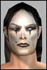

| Pages (2): « 1 [2] |  Last Thread Next Thread Last Thread Next Thread  |
| Author | Thread |
| Cayll Eleet  Registered: Apr 2002 | Shigeo is a fool, he never even led the Yxxil cult, it was led by Mogdai and Shigeo ran away half way through so do not overestimate him, he was nothing, and still is nothing, he appeared a few months later talking about robots and such, he is a carnival clown, ignore him, and all of his information on the old Demon Lord is completely wrong, I was there from beginning to end, I know what happened, he on the other hand makes it up for unknown reasons. Cayll |
 February 28th, 2003 15:50 February 28th, 2003 15:50 | #21 |
| Fixingsweet Eleet  Registered: Feb 2003 | ok Cayll, thanks for that. Information is the key to wisdom  or something like that or something like that  Last edited by Fixingsweet on February 28th, 2003 at 16:05 |
| February 28th, 2003 16:03 | #22 |
| SinisterCake Soleet  Registered: Apr 2002 | Yixxil Hey? Well, I remember being involved to err some degree or another back then, mainly with the really weird Cultists *Sightsee thinks back, takes a deep breath and begins to tell his tale* (OOC) BTW all that follows is what I posted back then, too tired to re-write it all in an easy to read format lol. So read away at what I experienced, back in the good ol days when I dared to do oppertunistic RP (/OOC) Sight came running from Holes in the wall after a lucrative but hazardous job in Athen Shire. After buying insurance he ran to the Bulletin Info Comp, only to see a large gathering. Floating in the air near the middle of this crowd he saw good old Xique, who he hadnt seen or drank with for a while. An incoming comms call came in from Savoy. Hi Sighty Im behind you. She said, but Sight twirled around and couldnt hear her. Then he heard the low throbbing of a Yalms antigravity generator, sure enough it was Savoy, waving at him with a smile on her face from a wound down window. Yea I see ya Boss. The mood seemed very sombre, and there was weight in the atmosphere, like the smell before a rainstorm. Leopard was talking to Xique How do we know if he will not return? Sight just stood there in confusion as the crowd mumbled some nodding others shaking their heads. Sight greeted Xique who looked quite concerned, and frighteningly sober. I have seen the face of Yixxil, but I assure you I am fine Leopard. What the hell was going on! Sight thought. But should he come back how are we to defeat it when weapons have no effect? Leopard asked. You must not feel hate of his disciples, or attack as it makes the Demon stronger. Xiques voice sounded grave indeed. But how do we know you are OK now? We thought you had gone insane or something? Asked a member of the crowd. Now this was very strange, folks talking about daemons? Sight decided to risk looking dopey in Savoys eyes. Errr Boss What the hell are these loonies talking about.. Any ideas? Hmm Daemons indeed, I think its just a trick that some Metaphysicist came up with, another play on getting power? OK, well Im lost thats for sure Boss! Well Ive heard enough of this rubbish Sighty, see you around. With that the Yalm powered up and lifted quickly into the sky and shot off in a Southerly direction. Sight had missed what was being said, but caught the fact that Xique had shot off (quite literally) and had left a bad air behind. Leapord spoke some more to the masses that had now gathered, as Sight wasnt too sure as to Xiques involvement he just had to ask. What the hell is Xiques involvement in this anyway? He shouted. He claims to have been somehow taken over by this Yixxil. Leopard shrugged. Another stated their opinion. Or he went insane? This didnt sound like the drunken gent Sight had conversed and drunk with on a few occasions. Wha? The only thing Xiques been harming is Reets Retreats stock of brandy! Sight was genuinely annoyed at what he thought was total ignorance and silly superstition. Some of the crowd laughed at his words. Hey Im--- Sight didnt get a chance to finish what he was going to say when an emergency transmission from Savoy came through. Oh my God! Im tracking some Clan militants in Clon****, they are slaughtering the traders! Her breathing sounded staggered, but determined, Whatever the threat was Sight knew she would sort it out. How many are there Boss? A few, havent got an exact count, Im going in! Errr Good luck.. Im on my way to see what I can do to help Sav. He left the crowd to discuss this fairytale to deal with what was Real Clanners attacking Omnis Clon****, a place he had never even visited. PLEASE NOTE; AS I DID NOT LOG THE CONVERSATIONS THAT TOOK PLACE, ALL PLAYER QUOTES ARE SUMMERISED AND THEREFORE INNACURATE. THIS SERIES IS MEARLY LIKE A SYNOPSIS OF EVENTS THAT HAVE OCCURRED TO SIGHTSEE. APOLOGIES IF ANY PLAYERS FEEL INSULTED OR MISREPRESENTED HEREIN. |
| February 28th, 2003 21:38 | #23 |
| SinisterCake Soleet Registered: Apr 2002 | Some more Old Stuff Today was proving quite uneventful for Sightsee so far. He was going over some blueprints and visual records for a planned extraction. Sometimes, he would curse as one idea fell through after another. Beth was her usual annoying self, getting het up over the simplest of hurdles within the computer system. If it wasnt the fact that Beth told him that shed had enough for the day, the following might have never happened Feeling quite bored, he went as usual to his local watering hole, Reets Retreat. As he walked up the ramp in Reets and headed towards the dance floor he saw a gathering of people. He recognised one of the group as a disciple of Yixxil, Mogdai. Sight recalled that Mogdai had a speech impediment. He had met Mogdai at a party in Reets a short while ago. Mogdai had gate crashed and was being disruptive, but Ignis had managed to get rid of him. (Maybe with the help of Sights joking around at the disciples expense)? Sight remembered how he and Ignis had proceeded to have fun and dance the rest of the night away in one form or another. Sight never had met Ignis before, but thought he was an OK guy. He reminded Sight of who he used to be a while back. Oh great, this joker again! Sight thought. In the gathering was a member of Mogdais cult Syrenity. A male Opifex called Gabro was standing confrontational in front of Mogdai. Sight moved up near to listen in to what they were talking about. Mogdais Pale face and bright eyes grinned at Gabro. Sight felt intimidated without the influence of a few shots of whiskey that he had when last he encountered this cultist of Yixxil. The general gist that he seemed to get from listening was that Diamondcut Dave was somehow a threat to these weirdos, which Mogdai referred to as Bright ones. Sight laughed at what he heard, Dodgy Dave? A goody two shoes, how ridiculous! Sight thought and tried not to smile too much with the gravity of the conversation between Gabro and Mogdai. He was about to leave for the dance floor when Gabro mentioned that Diamond managed to resist Yixxil or whatever, this was getting interesting. I feel you were not using your true power Yet still that is not enough. Gabro said. Sight couldnt help himself and began to feel his mouth open, Hey Moggy, just wave a few creds in Diamondcuts face, that should get rid of him! A Mocker who was in the crowd laughed hysterically. He hasnt got any creds remember? quipped Nydach. Mogdai and Gabro ignored their comments, Mogdai still intensly looking at Gabro, Do you wissssh for releassse? Gabro didnt say a word. Hell I do, If the pays good hehe Moggy baby, wheres ya Boss, Yixxil? Sight questioned. He was ignored still. Suddenly, Mogdai grabbed hold of Gabros throat, Gabro struggled as Mogdai asked, Yessss Your sssoul. It cravessss for it. Errr Stop that! Gabro gargled. Sight was getting concerned, but remembered (if there was any truth to it) that physical action was ineffective to these Meta. Hey, leave it out Moggy. Sight said in a calm but cautionary voice, pointing at the disciple as if in warning of action to come. Gabro started sweating, he managed to fight back a little, trying to pry Mogdais grip. I wish nothing! The disciples eyes began to glow like ember flames. Sight couldnt understand his apprehension to blow this saddo away, maybe the others in the crowd were experiencing the same thing? PAIN! Shouted the cultist. I SAID LEAVE IT MOG! Sight tried to get Mogdais hands off of Gabros throat with little success. CHAOSSSS! Feel the true esssenssse of your HATRED! Gabro screamed in great pain collapsed on the floor: dead. Sight was stunned, he just looked down at the corpse, whilst the cultist collapsed to the floor exhausted with a hiss. All was silent for a few moments, Sight hoped the Gabro had insurance. He turned his head slowly to this enemy. His temper grew slightly, he fought to control himself. Huh! Looks like ya Yixxil cant do his own dirty work till theres more hate eh? He said sarcatically. Minions, they dont make them like they used to? said Nydach. Mogdai looked up tiredly to Syrenity, I am tired My powerssss Need ressst Sssyrenity. To which she noded. Yixxil callssss. Hey where is your Yixxil? We can talk about the politics of Before Sight could finish the two desciples crunched down with their mouths and died. insanity? Sight was gob smacked, and shook his head. Lupoh laughed, Sight although feeling concerned said, Well, thats 1 cred 50 folks! A chap called Tebow entered to see the bodies and asked what was going on, Hypnotia and her friend Bamby explained what had transpired, to a confused Tebow. Bunch of loons Sight said, but in is mind he was intrigued, The only thing they accomplished is to make our bloody insurance more expensive dude. Hypnotia laughed. Sight turned to talk to the two ladies. So whats your take on this stuff thats happened? I think its silly, theyre silly Hypnotia replied. Yea me too Sight couldnt tell if Bamby was true to her word, but it seemed that the other lady did indeed believe they were silly. Theyre probably just nutty people, influenced by some power hungry Meta, thats all baby. He smiled and tried to be convincing with it. Hypnotia looked at sightsee as if trying to work this stranger out. Do you know who Morgan le Fey is? How could Sight forget! Yea I know who she is, in that damned weird castle. I stumbled across her room, forgot to knock and caught her naked But thats another story hehe. She is my Guilds Goddess. Sight visibly cringed. Oh No offence intended baby. He beamed his biggest smile. None taken. You are lucky to have escaped alive. Hynotias face was expressionless. Ahh, No well I didnt, she kicked my butt Only coz I was transfixed standing there looking at the big lady. Hehe. Sight had a knack of having no tact that kept resurfacing almost every second these days. Luckily for him the Mocker known as Lupoh came along, Sight looked over at him. Err excuse me ladies I need to talk to Lupoh here.. Lupoh a word? Very well. This had best not be about White Trash He replied. Sight bowed to the ladies and followed Lupoh to the top roof on Reets Retreat. They sat on the edge facing the two setting Suns. Well Diamondcut disappeared when I was there at Baboons yesterday, thought it was some kind of nano program I hear rumours What has REALLY happened to him? Asked Sight. I have probably only heard the same rumours as you, something like he went to another dimension Or that he joined a cult. Sight only knew Diamontcut a little, but he didnt strike as being the type to be religious, yet alone joining a cult. Look I remember when you guys wanted Saalz to check Diamond out I stuck my head out on the line to make a deal with him to prove he was gun runnin So I know it wasnt exactly an amicable relationship that you guys had He aint my buddy, but Im getting sick and tired of the Yixxil s*it! There was no reply from Lupoh, Sight sighed and looked to the two suns, the cold was slowly setting in, he decided to change the subject. There seems to be more than meets the eye here on Rubi-Ka But Demons? Hehehe dont make me laugh! Lupoh turned to look at Sight. Why not demons? You see them everyday, manifested by Meta Physicists. But cmon not REAL ones, as in the religious ancient texts. Sight was glad that Lupoh seemed to know what he was talking about, when it came to Meta Physics he was clueless, but wasnt gonna tell him that. Hatred feeds this demon Meta Physicists do the same thing to summon their furies and such What if this demon started out small but then tapped itself into the hatred of more then one Meta? Sight didnt think of that one, it sounded feasible. Even now there was debate as to what exactly these entities were classified under in Biology. Lupoh continued, Even now intolerance spreads through War, and hatred grows by the day. There are many things unknown to us? Yea thats what worries me. Sight noticed the intelligence and more importantly, wisdom in this Mocker trash, quite strange and unnerving. Lupoh looked over the horizon as the wind started to pick up. I come up here I listen to the wind And I hear whats going on in the World War Hate Pain Yixxil offers lasting peace. Sight sighed and looked down to his hand, his own pain rising from somewhere deep. He listened closely to the wind and imagined he could hear the screams, he quickly snapped out of his thoughts. Yea, well maybe? But I try to shield myself against the wind my friend. Sight smiled. What a time Im having. This Yixxil business, Clon****s attack, and White Trash! Sorry I said I wouldnt mention White Trash. Lupoh turned to Sight and gave a knowing smile. I do not deal in such products, when I can make my own. Lupoh searched through his pack and brought out a stim, the liquid within glowed. Sight had no idea what it was, but was beginning to get concerned he shouldnt have let his guard down, especially to a Mocker. That stuff will kill you dude Frowned Sight, he was hoping his original feelings about the White Trash drug were right after all. He believed the incidents that happened with the down and outs rampaging in Omni Sewers were a result of the testing phase of the nano drug, could it be that what he saw briefly was the final product? I have no need for White Trash When this is perfected, White Trash will be non-existent. Lupoh smiled as he put away the stim. And does it cause the same symptoms? Sight was getting agitated, one thing he didnt like was the abuse of the poor and helpless. Maybe? As I stated already, it has yet to be perfected. Testing it on myself has so far proven unsuccessful. Did Lupoh seem to think Sight was impressed, surely not? He let Lupoh continue, Sight needed to get as much as he could from him. I cannot see the results directly-, a defensive statement or was it the truth? Another- Another has promised me an alternative. Tell your Boss, he might want to reconsider Sight couldnt hide the seriousness written on his face. So it seems Valiak was lying all along, or was Lupoh running his own project? He thought. Look, White trash has already caused havoc in Omni-1 with all that rioting and destruction caused by it! Sights temper rose. Well if you guys do distribute a drug as destructive Im sorry to say, I will be all over you and your operation, I will shut you down! Lupoh merely smiled, got up to leave and said calmly, We shall see. Sight remained up there on the roof to think things through, he had showed his temper, and said things that maybe he shouldnt have. Savoy needed to know of this, that much was sure. But how honest should he be with her? He decided to open up the SRS channel, so that all in his organisation could hear the worrying news. Savoy, Im sorry to say this, but I think we have a problem.. err maybe two? Oh so whats another few problems to the ones we already have? What now Sighty? Its White Trash, I think the Mockers are producing a final product as I had feared. Oh and err this Yixxil business, I kinda had an encounter with them. Savoy sighed, there was a pause before she replied. Not now Sight, tell me about it later OK? He didnt know what to really say, Savoy had been through a lot of bad news in the last few weeks. Of course she didnt want to hear about it! OK Boss, Ill get a meeting arranged sometime. Sightsee out. He sat there for a little while before deciding to head back down into Reets PLEASE NOTE-Characters quotes were 90% used from the vicinity logs. PLEASE REPLY TO THIS POST IF YOU WISH TO READ PART 4 ETC. OF THIS STORY. |
| February 28th, 2003 21:39 | #24 |
| SinisterCake Soleet Registered: Apr 2002 | And yet some more... (OOC) As you have noticed, some of this stuff is not directly all about Yixxil, apologies, but it was my kind of diary (/OOC) PLEASE NOTE: What transpired here was on the 11th of June 2002. From now on I will endeavour to include the date to which the Story/Synopsis, refers. A Couple of hours passed and Sightsee had attended to a few chores before heading back to Reets Retreat. As he went towards the Glass room he noticed that there were a few people still milling about in the corridor. Levrivers turned to speak, You missed the mass suicide Sight. SSssSSss Teehee Moondrop laughed, The mighty demon of the Ss! They all killed themssselvesss. Levrivers was always the one to be able to keep his wit and jest up in most situations, it seemed to Sight. Naa seen it already Lev. Obviously more disciples had terminated their own lives. Sightsee was getting a bit tired and fed up, but wanted to know more of what was going on and so stayed there for a while. Leopard then entered the corridor, Lev turned to look at her, and he was looking serious all of a sudden. You should be careful out on the streets on your own lil Leo, you never know what nasty people you might run into? Angelynne stepped in, Lev, leave Leo alone! Sight was surprised at what seemed to be a confrontation, from what he knew of Lev maliciousness was not his thing, just sarcasm (in a good-humoured way). Err, Leo can handle herself well dude. Sight said as Lev and Leo were in a stand off, trying to psyche the other out. Lev shrugged his shoulders with a wry smile on his face he said, Aww, Im just giving her helpful advice there are gangsters out there, petty thugs thieves! I know how to stay safe Do you? Said Leo, she smiled seems you have already fallen a couple of times now watch your steps bro. Me? I think you might need to watch your steps pretty soon Leo. I have been dealing with worse demons than you lately Lev. Hey, Its an evil World out there. He remarked, Angelynne was getting agitated at this point and said, Lev, I have pets that are meaner than you! And I have lockpicks bigger than you Angel. Lev smirked at her, Sight looked at Leo, Angel then at Lev and moved into the middle of them and faced Levrivers. Whoaa, wait a second, whats going on dude? The two verbal combatants ignored sight; Drtiny who was also present looked confused at what was going on. Shouldnt you be off playing bad guy or something with your little pawn fellas? Leo shook her hand and waved Lev off. Lev just smiled evilly and Sightsee looked lost for like the 5th time in that day. Gabro who had previously been killed by Mogdai entered the corridor; he was dressed in the same dark manner as the Yixxil disciples. What now? Thought sight, it looked like the Gabro he saw before his death, yet it was not the same one that had now joined them. Leopard I wish to talk to you in private. Gabro smiled sinisterly, Its important come, follow. Watch yourself Leo Sight warned as Gabro walked towards the lavatories, Want me to come with you? Leopard turned to follow and said to Gabro, If its an a attempt to turn me it is quite foolishly planned. She then turned to Sight, No let me speak with him He has no power of me I withstood Chab (Xique); I will withstand this one. If I am not back in twenty minutes Come after me. As you wish baby. Sight was solemn and didnt even know if he would be able to do anything to help here should it come to it. Leo followed Gabro and Sight got ready for trouble. As it turned out Sight didnt need to take action and that the Yixxil disciples wished to turn or have Leopard, maybe she was a Bright One as well? If so what did it mean anyway? Leopard and sight discussed what had been said, in conclusion Leopard said, We will stand through this We must prevail, we WILL prevail in the end. Sight did a sweep of the area in Reets, to make sure there wasnt any potential threats around. As he walked from the glass room towards the Rumble room, he spotted Xique, Gabro and Boco talking. More damned followers he thought, Xique looked strangely cold and sober. Sight thought hed try to get to the Xique he knew, and had a couple of drinks with. Chab Said Boco before Sight could speak. Yesss Boco? Hissed Xique. You said I wouldnt be interested..." I said you perhapsss you dont want to. ass we ssayed alsso. Where can I find him? We will inform him about you. Looked like the DJ was interested in this dark cult, it worried Sight, but as he didnt know Boco on a personal level, why bother to ask him why? It was time for Sight to butt into the strange conversation. Hey, well it seems Xique aint Xique, right Xique? We are Xique do not doubt sssuch. Sight brought out a bottle of Giovanni Brandy. Xique I got your fave drink here buddy. Smiled Sight, as he waved the bottle in front of Xique, Its good for we to experience every illusion, its full of hate ya know? No response was there for a short while. Aww Cmon Yixxil dude! Take it and come drink with me. We know what mussst be done asss we only feed on anger and fear we dont want what you have to offer. Ahhh I see, you aint allowed your favourite Giovanni Brandy? We dont want it. Why not? Mans weakness is best found while under the influence rage, jealousy, hatred are amplified are they not? Of course we have not experienced it yet have we? By learning of it Yixxil will surely be stronger if not wiser? He is wissse and offerss you the way. A glint appeared in Xiques eye as he looked to the ceiling and seemed overwhelmed for an instant. Why must Yixxil gather the damned? Cant you just leave that to God? Asked Sight. We do not care about Him, as we do not care about life. What are your goals for Gods sake man! Shouted Sight in frustration, he opened the brandy and started drinking it himself. To dessstroy all life! If all life is destroyed, what shall remain Xique, think about it? Death! Sight laughed sarcastically at his madness and said, The Universe will never die fool! Just then Eddie (Ignis) who had managed to throw out the Yixxil from a party a few days ago came joined them. Look Xique, Get lost! He said. Xique and Gabro surrounded Ignis. Sight was trying to keep his temper in check. Mogdai entered also and got behind Ignis, Sight cocked his two BBI Faithfuls, ready to unleash his Hell upon the disciples. Mogdai raised his arms to the heavens and started to shout out a prayer or chant. MASSSTER OF CHAOSSS, DESTRUCTION. TAKE THISSS CHILD TO YOU DEMON OF DECADENCE! HAH! BLESSS HIM WITH THYS SSSIGHT. SSSALVATE HIM, NOW SSSALVATION! Ignis quickly executed a program that enabled him to run at great speed and shot off downstairs, the disciples followed him, as did Sight who cursed out loud. Sights anger was rising thanks to the Brandy, he was beginning to not care about his own safety, but one thing was for sure, he wasnt gonna let another person die in front of his eyes. Could use a little BACKUP! He heard Alptraum shout form the fireplace room. When Sight reached the lower corridor of Reets, he found Ignis surrounded again, this time there was yet another two disciples called Tamiyana and Syrenity. Sight moved straight through the Yixxil, and stood in front of Ignis, as a barrier of sorts. Ignis, they want you BAD dude. Mumbled Sight, not taking his eyes off the cultists. Mmm the fear isss sso high! swooned Syrenity. Hisss fear Isss lovely. Now We ssshall feed upon it. Sight was unsure as to whom Mogdai was referring to, but it wasnt important, what was importent then at that time, was the fact that they were about to kill him or Ignis. I dont fear you. Ignis said, suddenly Mogdai lunged forwards with lightening speed-grabbing Ignis by the throat. Sight turned to grab mogdais arm, he was shocked that he wasnt able to respond to the attack, as he did so Tamiyana grabbed hold of Sights sides and threw him with immense force into the wall. Sight lost grip of his weapons as he instinctively raised his hands to the incoming wall in a bid to lessen the impact, the guns scattered a few feet either side of his landing. Ugh Stop! Squeaked Ignis as his hands moved to execute a program. Mogdai licked his lips, and his eyes began to glow like fire, Xiques eyes began to glow as well, but his expression was that of sorrow. Run Eddie Run! Xique suddenly shouted. Sight shook his head to focus, the gun was to his left and he was on the floor, he rolled over the gun clasping it in his hand, with his back against the floor he fired a snap-shot at Mogdai, the bullet hit his upper back. Mogdai hissed as he lost his grip and fell forwards into the wall, a bright flash and Ignis disappeared! Drtiny had witnessed what happened but was confused, Eddie? He shouted. Dr tiny helped Sight to his feet as the Yixxil disciples separated to search for Ignis. Sightsee, what the Hell is going on here? Where did Ignis go!? Sight was still a bit dizzy. I dont know? The doctor shrugged. Mogdai got up from the floor and calmly said No matter Boco is oursss now. He will serve usss well. Sight was stunned that Mogdai (although bleeding) was relatively uninjured; Mogdai executed a program and shot off to the glass room in search of Ignis before Sight could let of another round. Sight followed, his rage now apparent, confused Drtiny followed him. When Sight got to the glass room, Mogdai, Syrenity and Gabro were walking down the ramp from the glass floor above. Sight stood at the bottom, they saw him and knew he was on the edge, but it only served their wishes well. Stay there, I have something for you!! Sight shouted through gritted teeth, Drtiny could tell what that something was going to happen Mogdai merely laughed. Syrenity twisted her body with a look of joy on her face, almost a dance of the corrupt the chaos, evil by its very nature at the hatred that Sight exposed. Suddenly Sight shouted DIE!!! Enough's, Enough.. Aarrrggghhh!!! He brought both guns to bear on the group, firing madly without focus; pure anger guided his weapons. The Yixxil moved with lightening speed around him, without concentration, the bullets merely embedded themselves everywhere but in their intended targets. Mogdai stood up and looked at his wound, bleeding, Pain Lovely SSssSS. He suddenly charged with great speed to Sight smacking the guns from his hands then grabbing him by the throat. Ugh Ugh.. DIE! gurgled Sight as he tried to spit in Mogdais face, but failed, the spittle drooled from his chin. Boco came running in, and put his Vector Shotgun to Sights head, Want to try it Sight? He said. Syrenity.. Deal with himssss. Mogdai hissed, Syrenity executed a program and Sight screamed as his life escaped him. Sight was drunk, and he was in the Neuters R Us nightclub, dressed and sitting at the bar, holding a drink in his right hand. He looked around nervously, confused. He checked the date, he remembered the morning and he remembered everything up until meeting Xique. A guy to his right said, Bloody women! to him as if they were in conversation. What has happened to most of the day? Thought Sight as he downed the two double shots of whisky. |
| February 28th, 2003 21:41 | #25 |
| Fixingsweet Eleet Registered: Feb 2003 | No need to apologieses its Great, Thanks but now i cant stop thinking about how much i miss Chab..  |
| February 28th, 2003 21:54 | #26 |
| HiredRunner Leet  Registered: Nov 2002 | That name of bitterness burns in mouth. Mogdai. *grinds teeth*. his god wants to challenge lifeand kill thats fine. NO ONE threats the grid. My hatred for that soulless had blinded me from my goal. I gave up the hunt for the Grid City and plotted numerous ways of putting that creature down. Further into to my troubles I refused all guild responsiblities to hunt him down. I can say that Diamondcut, a man I can look up to, finished it before I could. Im glad. I figure that... ... If I would have killed him I'd just started killing at random to continue the rein of blood that I had coming to him. He threatened my home. No one goes into a mans home and threatens him without punishment. After the event I have come to realize that I value my home in the grid just as much as the fixer grid. I now have taken up with the pursuit that I will find the Grid City. I feel that out in the wastelands of the shadows there is a entrance to it. I Believe I will come home... /stands up and coldly snaps the bolt on his Smg and shoots the Vidscreen Cam. |
| March 2nd, 2003 03:14 | #27 |
| Fixerben Semi-Retired  Registered: Oct 2002 | None of this has helped me. I guess its time for me to meet with Shigeo again. |
| March 2nd, 2003 08:32 | #28 |
| Fixingsweet Eleet Registered: Feb 2003 | Then what would you like to know? |
| March 3rd, 2003 17:08 | #29 |
| This thread continued after 2003; its 1 later reply isn't part of this archive. | |
| Pages (2): « 1 [2] | The saved copy (Funcom's forum archive, saved by the Wayback Machine in 2025) |
All times are GMT.